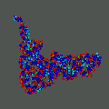
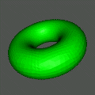

NOTE:
This documentation provides information about installation, configuration,
and general usage of the SG libraries.
Information about the programming interface provided by the SG software
can be found in the Programmer's Guide.
SG is an unstructured simplex mesh
OpenGL display and manipulation tool for use with
the finite element research codes MC
and PLTMG.
SG provides OpenGL-based graphics over UNIX and INET
sockets on UNIX/X-based systems, Win32-based systems, and other systems.
It can also be used with
MCLite
as a replacement for MATLAB's builtin graphics for polygons.
SG can read Geomview OFF files and OpenInventor files for polygonal
surface descriptions, and it can also read PDB files for molecule descriptions.
SG looks and acts somewhat like Geomview, and it mimics most of the basic
features and controls of Geomview for displaying polygonal 2-manifolds.
SG is designed to mimic the well-known Geomview program from the University
of Minnesota's geometry center, and it uses one of Geomview's input file
formats (the "OFF" format). Although SG it is quite a bit simpler than
Geomview, it has three advantages when compared to Geomview. First, it can
take input directly from files, UNIX pipes, UNIX domain sockets, and
INET sockets (Geomview cannot take input from INET sockets).
Second, it can produce provably
correct PostScript renderings of meshes (Geomview uses a baricenter-based
front-to-back ordering for the Painter's algorithm, which often fails for
complex meshes; SG uses a linear programming approach which is
mathematically guaranteed to work if the picture is paintable with the
Painter's algorithm). Third, it will build and run on Win32 platforms
such as Windows 2000, Windows NT, and Windows 98.
(Some may actually view this as a disadvantage.)
In the case of Win32, SG uses the WINSOCK API for INET socket access.
The window-system specific connection to X11 or Win32 is made through
"WGL" extensions to Win32 under NT, or using the SGI "GLw" widget set
on X11 platforms.
The graphics in SG is done in an entirely platform-independent manner
using OpenGL.
This portability is due to SG having been built on top of
a portable low-level abstraction library called MALOC (Minimal Abstraction
Layer for Object-oriented C). MALOC was written primarily to support the
development of MC, but is now also used for SG. Both MALOC and SG are now
both used by Randy Bank in the development of his software package PLTMG.
Quaternion-based Trackball Rotator

SG is a polygonal manifold display and manipulation tool.
It can also display PDB (Protein DataBase) data as a collection of
intersecting triangulated spheres of appropriate color and radii.
It is basically a trackball rotator, although one can also scale and
translate the object being displayed.
The manipulation is done with a combination of the mouse and the keyboard.
The rotator is quaternion-based, following the trackball example in Mark
Kilgard's OpenGL programming book.
The rotator avoids gimbal lock, rotation instability, and other degeneracies
through the use of a projection ball and quaternions.
The hysteresis problem usually present in rotators is removed by employing
Ken Shoemake's non-accumulation trick from his famous Arcball example in
one of the Graphics Gems.
(I.e., when you move the mouse back to the starting point in a rotation,
the object resumes its original position.)
OpenGL-to-Postscript Generation

SG can generate a very high-quality Postscript rendering of any displayed
scene, with (provably) correct logical rendering order of the polygon
primitives, through the use of builtin routine called SGps.
SGps generates Postscript output from an arbitrary
OpenGL scene, by using the feedback buffer mechanism in OpenGL.
SGps is similar to Seth Teller's PSGL, and to Gary Wu's PSOGL,
but it does not use the same baricentric depth quicksorting of the polygons,
which is prone to incorrect rendering orders for complex scenes.
Instead, SGps is based on a linear programming approach
developed jointly with R. Bank.
If a scene can be rendered by the Painter's Algorithm, then SGps is
guaranteed to find a logically correct painting order, and it will then use
the Painter's Algorithm to render the scene correctly in Postscript.
Input Format
Here are some examples illustrating the Geomview-compatible OFF input format tha
t
SG employs:
tri,
tet.
The portability of SG is attained by the use of a low-level
abstraction library called MALOC.
The MALOC library must be installed before installing SG.
Similar to MALOC, SG is easily buildable from source on any UNIX-like system,
and uses a GNU autoconf build environment.
While SG is itself a self-contained software package, it is one of several
components of
FETK
(the Finite Element ToolKit).
FETK
consists of the
following components written in Clean OO C:
MALOC - Minimal Abstraction Layer for Object-oriented C programs.
PUNC - Portable Understructure for Numerical Computing.
MC - Manifold Code finite element package (uses MALOC and PUNC).
MCX - MC eXtension libraries (uses MALOC, PUNC, and MC).
MALOC is self-contained, and requires only an ANSI-C compiler on a UNIX
or Win32 platform. PUNC, GAMer, SG, and MC are also self-contained, but rely
on MALOC having been previously installed on the platform. Additional features
of MC are enabled if PUNC is available, but PUNC is not required to build MC.
The MC eXtension libraries MCX are constructed on top of MALOC and MC, and
in order install and use MCX one must first correctly configure and install
both MALOC and MC. MCX is made up of a number of individual libraries
developed by members of our group, or contributed by one of a number of
colleagues. More information about
FETK
can be found on the
FETK
website:
SG is copyrighted, but is redistributable in source and binary form
under the following license.
The SG source can be downloaded from the
FETK Download Page.
In case you are having trouble with X11 on your MacOSX Leopard machine,
here are some precompiled binaries:
You gave me a "patch.gz" file to fix a bug in SG; how do I apply the patch?
To apply patches to upgrade SG to a new version, you first obtain the patch
from me or my webpage as a single file with a name like "patch.gz". You
apply the patch after you have unpacked the sg.tgz file as described above.
To apply the patch, cd into the directory containing the root SG directory
(called "sg" after unpacking sg.tgz) and execute the "patch" program as
follows (the patch program exists on most UNIX machines):
gzip -cd patch.gz | patch -p0
Patch files are simply the output from a recursive "diff" that are used to
represent all differences between two directory trees. For example, to create
a patch representing the changes from version 1.0 of SG (in directory
sg_1.0 for example) to version 1.1 of SG (e.g. in directory sg_1.1),
I would normally type the following:
diff -r -u -N sg_1.0 sg_1.1 > patch1
gzip -v patch1
which would produce the gzipped patch file "patch1.gz". If you had previously
installed version 1.0 of SG but would like to upgrade to version 1.1 of
SG, you could just download the file "patch1.gz" and apply the changes
using the program "patch" as above, rather than downloading and reinstalling
the entire version 1.1 of SG.
I really don't know what I'm doing; how to I get more documentation for SG?
Why did you develop SG? There are many other mesh viewer packages, right?
Yes, there are. Geomview is awesome. However, we often want to display the
mesh in a calculation on a local workstation, while running the calculation
on a larger remote (possibly parallel) machine. For large complex meshes,
opening up a remote X display is extremely slow (the X libraries may not
even exist on the large number crucher). By running SG on the local
machine, our numerical codes on the remote machine can send polygons in
binary XDR format directly to an INET socket on the local machine. This is
extremely fast, even for very large datasets.
Finally, we often need to run visualization tools natively on Win32 platforms.
There are a couple of things we didn't like about Geomview, which we made
different in SG. For example, the rotator in Geomview exhibits hysteresis
in the sense that if you return the mouse to its original location when
rotating, the object doesn't actually return to its original position.
SG on the other hand uses a quaternion-based trackball rotator, and uses a
rotation non-accumulation trick due to Ken Shoemake to avoid this type of
hysteresis (the particular trick can be found in one of the Graphics Gems
volumes). The PostScript generation mentioned above was another reason for
writing SG.
What is in all of these subdirectories? Where exactly is "SG"?
SG consists of several (class) libraries from which you will call routines
to handle your application. You will need to write a main driver program
(and any supporting routines you need) and then link to the libraries.
Alternatively, you can build the SG tools "sg" and "mcsg" by doing a
"./configure ; make ; make install" in the tools subdirectory. These two
tools process and display polygon data, and have functionality and behavior
similar to Geomview. If you are simply after these two tools, then you
don't need to actually use the libraries and headers that get installed
when you configure/make/make install the SG libraries. However, the in
order to successfully configure/make/make install the tools sg and mcsg,
you must first succesfully configure/make/make install the SG libraries.
As described in the file "INSTALL", you will build all of the libraries in one
shot for your particular architecture, along with various test programs to
verify that the various pieces are functioning correctly. The libraries end
up in "sg/lib", and the header files are in subdirectories in "sg/inc".
The following directory tree is created when you unpack the SG "sg.tgz"
distribution file by following the instructions in the INSTALL document:
Within each library source directory is an additional subdirectory,
"sg". The "sg" subdirectory contains public headers for the library,
representing the library API; these headers will be installed in the
specified header install directory during the install procedure after
building SG. (The OpenGL library subdirectories gl, glu, and glw contain
additional OpenGL-specific API files in additional subdirectories.)
The following is a brief description of each subdirectory of the package.
sg - The entire SG package
sg/config - GNU Autoconf scripts and non-unix config files
sg/doc - SG documentation
sg/examples - Complex examples and data files for using SG
sg/src - SG source code (all source and headers)
sg/src/aaa_inc - Header installation tools
sg/src/aaa_lib - Library installation tools
sg/src/*/sg - The SG headers (API)
sg/src/base - Source for M. Holst's BASE (SG foundation headers)
sg/src/ogl - Source for M. Holst's OGL (OpenGL rotator kernel)
sg/src/vgl - Source for M. Holst's VGL (Virtual openGL)
sg/src/gl - Source files for dubset of B. Paul's MesaGL
sg/src/glu - Source files for dubset of B. Paul's MesaGLU
sg/src/glw - Source files for dubset of B. Paul's MesaGLw
sg/tools - Some binary tools for use with SG
Okay, I seem to have installed SG correctly; how do I actually use it now?
Using the SG code is very simple; just type "./mcsg" without arguments and
you get a list of all of the options. The socket bridging tool functions
similarly; typing "./mcbridge" without arguments gives you a list of all
of the possible options. The remaining tool "sg" is a motif version of
"mcsg" with similar functionality, but with a more sophisticated button
layout.
What is the class hierarchy? How are the various libraries related?
Detailed information on the class relationships can be found
in the
Programmers's Guide.
The following directed graph shows the class library dependencies.
(This tends to evolve as MC is developed.)
SG is distributed in both binary format (as a binary RPM file
sg-VERSION.i386.rpm for i386-based versions of Linux) and in source
format (as a source RPM file sg-VERSION.src.rpm and as a gzipped tar
file "sg-VERSION.tar.gz").
Installation using the binary RPM file
The following rpm command will install all of the SG headers and libraries
into /usr/local/include and /usr/local/lib, and will install the SG
documentation into /usr/share/doc/packages/sg:
rpm -Uvh sg-VERSION.i386.rpm
Installation and rebuilding from sources using the source RPM file
The following rpm command will unpack the source rpm file
"sg-VERSON.src.rpm" into the SG gzipped tar file containing
the sources called "sg-VERSION.tar.tar.gz" and into a small RPM
spec file called "sg-VERSON.spec":
rpm -Uvh sg-VERSION.src.rpm
The sources can then be unpacked and built using the directions for
the gzipped tar file below.
Alternatively, the following rpm command will do these steps for you:
rpm -bp sg-VERSION.spec
Rebuilding binary and source RPM files from the gzipped tar file
The SG sources contain the RPM spec file "sg-VERSON.spec" in the
root source directory; as a result, rebuilding the RPM files from sources
can be done using the rpm command:
rpm -ta sg-VERSION.tar.gz
The result will be the corresponding source and binary rpm files,
named "sg-VERSON.src.rpm" and "sg-VERSION.i386.rpm".
Normally, these files are written to /usr/src/redhat/SRPMS
and /usr/src/redhat/RPMS respectively, but you must be logged in
as root for these to work.
The destination directories can be overriden using arguments to the
rpm program (see the rpm manpage).
Installation and building from sources using the gzipped tar file
The following command will unpack
SG into a number of subdirectories and files on any UNIX machine
(and on any WinNT machine with the GNU-Win32 tools gzip and tar).
gzip -dc sg.tgz | tar xvf -
Building the package using the GNU "configure" shell script and "make"
The "configure" shell script in the "sg" directory (the toplevel
directory created when you unpacked the SG tgz file) will build the entire
package. This is a standard GNU autoconf-generated configuration script.
For a list of the possible configuration options, type:
./configure --help
You should be able to build SG by simply typing:
./configure
make
make install
However, it is often advantageous to keep the original source directory
pristine; the configure script can actually be run outside the source
tree, which will keep all files created by the build outside the source
tree. (This idea is related to the section below describing how to build
binaries for multiple architectures at the same time using the same source
tree, and requires that your version of make has the VPATH facility, such
as GNU make.) For example, I build SG in a separate directory from the
source tree as follows:
gzip -dc sg.tgz | tar xvf -
mkdir sg_build
cd sg_build
../sg/configure
make
make install
Building binaries for multiple architectures in the same source directory
If you have a version of "make" that supports the VPATH facility (such as
any recent version of GNU make), then you can build the package for multiple
architectures in the same source directory (in fact, you can do the compiles
at the same time without collisions). This is very useful if you have your
home directory on an NFS volume that you share among multiple architectures,
such as SGI, Linux, etc. To build SG for all the systems at the same time,
you simply make an additional subdirectory in the main SG directory for
each architecture, copy "configure" into it, "cd" into the subdirectory, and
then install as above. For example, on a linux machine you would do the
following:
mkdir linux
cp configure linux/.
cd linux
./configure
make
make install
If you mount the same NFS home directory on for example an OpenStep box,
you could at the same time do the following:
mkdir next
cp configure next/.
cd next
./configure
make
make install
Again, both builds can actually be done outside the source tree rather
than in a subdirectory of the source tree, as described in the previous
section.
Building shared libraries rather than static libraries
(MIKE: give an overview of libtool.)
Rebuilding the configure script and the Makefile.in files
If for some reason you actually need to rebuild the configure script or the
Makefile.in files using the GNU autoconf suite, you should read the block of
documentation at the top of the configure.in file. The commentary I put there
explains exactly how the GNU autoconf suite must be used and in what order,
and exactly what files are produced at each step of the process. A script
called "bootstrap" which automates this process is located in the config
subdirectory of the SG source tree.
Platform-specific information
Below is some platform-specific build/usage information for SG.
Linux (Source: M. Holst, UCSD)
Things should work as described above.
FreeBSD/NetBSD/OpenBSD (Source: M. Holst, UCSD)
Things should work as described above.
OpenStep (Source: M. Holst, UCSD)
Things should just work, but you may have to set the CC environment
variable as follows before typing ./configure:
export CC="/bin/cc"
or you might need to use:
export CC="/bin/cc -ObjC"
IRIX (Source: M. Holst, UCSD)
If you are on a 64-bit IRIX box such as an Onyx, Octane, or Origin,
set the CC environment variable as follows before typing ./configure:
export CC="/bin/cc -64"
If you are on a 32-bit IRIX box such as an O2 or Indy,
set the CC environment variable as follows before typing ./configure:
export CC="/bin/cc -32"
Win32 (Source: M. Holst, UCSD)
Unless you have the Cygwin environment, you need to use one of the
included project file collections for one of the commercially
available ANSI C or C++ compilers for the Win32 environment.
What you end up with
Once the build completes via the "configure;make;make install" procedure above
with no errors, the SG library (libsg.a and/or libsg.so) is installed
into the specified installation directory. You can also build some useful
tools that employ the SG library by cd-ing into the "tools" subdirectory and
repeating the "configure;make;make install" procedure.
Once the tools build completes, you will end up with:
mcsg - Core socket OpenGL tool ([GLw | WGL] + [X | Win32] + OpenGL)
mcbridge - A socket bridging tool (FILE/PIPE/UNIX/INET)
sg - A Motif version of mcsg (Motif + X + OpenGL)
If the SG tools work like they were designed, you won't need any more
information to use the tools. If you want to know more about the details
of the algorithms in SG, or about the implementation details such as the
socket graphics, have a look at the
Programmer's Guide.
Getting SG to find your installation of GL/GLU/GLw/Motif/Etc
If your installation of OpenGL (libGL, libGLU, libGLw and headers) and/or
Motif is located in an unusual directory, then the configuration script may
have trouble finding the libraries or the headers. The configure script
prints out the state of affairs quite clearly as to whether it found the
libraries and the headers. If you have the libraries and configure is not
finding them, then here are several possible solutions, each of which usually
works. They are listed in preferred order (i.e. you should try Solution 1
first, and if that doesn't work try Solution 2, and so on).
Note that you DO NOT need Motif in order to build SG; if you DO have Motif,
then the additional Motif-based tool "sg" is built. Without
Motif libraries on your system, you still get the base socket graphics tool
"mcsg" and the socket bridging tool "mcbridge". ("sg" is
somewhat fancier than "mcsg", but "mcsg" has all of the core functionality
of the Motif tool.) On a Win32 machine such as Windows NT, you will also
end up with both "mcsg" and "mcbridge".
Solution 1:
Have your system administrator install MPI in a proper system
directory so that MALOC (and other AUTOCONF-based codes) can find it!
Solution 2:
Find the location of the OpenGL libraries and headers and the
Motif libraries and headers on your system, either by asking your
sysadmin, poking around yourself, or (if you have it) using the
"locate" utility:
On my Redhat6.2 Linux box with LessTif supplying Motif, XiGraphics'
supplying two of the OpenGL libraries (libGL and libGLU), and Mesa
supplying the third (libGLw), the following output is produced:
SG (Socket Graphics) was conceived,
designed, and implemented over several years by
Michael Holst,
beginning with an initial implementation in 1994.
Various colleagues have contributed ideas and/or code to SG
(see the credits list below).
SG (Socket Graphics)
Copyright (C) 1994--
Michael Holst TELE: (858) 534-4899
Department of Mathematics FAX: (858) 534-5273
UC San Diego, AP&M 5739 EMAIL: mholst@ccom.ucsd.edu
La Jolla, CA 92093 USA WEB: http://ccom.ucsd.edu/~mholst
SG was designed to be a portable networked visualization tool for use in the
development of MC (Manifold Code), an adaptive multilevel finite element
package also developed by
Michael Holst.
It is also used by Randy Bank as
the primary visualization tool for PLTMG. Both SG and MC are written on top
of a low-level abstraction layer called MALOC (Minimal Abstraction
Layer for Object-oriented C), also developed by
Michael Holst.
SG was developed almost
entirely on a home-grown 90Mhz Pentium PC running various flavors of
Linux and [Free|Net|Open]BSD, using primarily GNU, BSD, and other free
software development tools. Most of the development occurred during the
hours of 10pm to 2am on a daily basis for several years, under heavy
influence of Starbuck's coffee, with helpful advice provided by Mac and
Mochi (two cats knowledgable in socket programming and numerical analysis).
SG was released under the GNU GPL (GNU General Public License) beginning
with the initial implementation in 1994, and continues to be released under
this license. What this means is that like all
GNU software, SG is freely redistributable in source code form following
the rules outlined in the text of the GNU GPL. You should have received a
copy of the GNU GPL with this distribution of SG; a copy can be found
here.
If you did not receive a copy of the GNU GPL, please write to me and also
write to:
The Free Software Foundation, Inc., 675 Mass Ave, Cambridge, MA 02139, USA.
Software included in the SG source code package
A complete roadmap to the source code forming the SG package can be
found above.
While the core SG classes were developed primarily by
Michael Holst,
some additional software is currently included with SG:
sg/src/vgl/vglm.c - Motif Variant of vgl (joint Bank/Holst effort)
sg/src/vgl/oglps.c - Perfect PS generation (joint Bank/Holst effort)
sg/src/gl/* - B. Paul's MesaGL (the GL library)
sg/src/glu/* - B. Paul's MesaGLU (the GLU library)
sg/src/glw/* - SGI's OpenGL widgets (the GLw library)
The extra conditionally-build libraries provide the complete OpenGL
capability that SG requires in order to function, if these libraries
are not available on the particular platform. Under normal circumstances,
these three libraries will not have to be built; the OpenGL API they
provide is completely software-based, and will be slower than native
hardware-accelerated OpenGL which is normally available on modern
PCs, Macs, and SGI platforms.
Credits
Below is a credits list for the people that have
contributed to SG in one way or another.
The fields below follow the credits file format used in the
Linux kernel CREDITS file to allow for easy manipulation via shell scripts.
The fields are as follows:
N: name of contributor
E: email address
W: web address
P: PGP key ID and fingerprint
D: description of primary contributions
S: snail-mail address
N: Michael Holst
E: mholst@ccom.ucsd.edu
W: http://ccom.ucsd.edu/~mholst
P: 1024/0xB5212DCD
D: sg/* -- The package structure
D: sg/acconfig.h -- The platform abstraction information
D: sg/configure.in -- The GNU autoconf/automake structure
D: sg/config/* -- The GNU autoconf/automake shell scripts
D: sg/doc/* -- The package documentation
D: sg/examples/* -- The package examples
D: sg/src/aaa_inc/* -- Library header build structure
D: sg/src/aaa_lib/* -- Static and shared library build structure
D: sg/src/base/* -- M. Holst's SG Foundation headers
D: sg/src/ogl/* -- M. Holst's OpenGL-based trackball rotator
D: sg/src/vgl/* -- M. Holst's window system abstraction layer
D: sg/src/gl/* -- The libGL wrapper
D: sg/src/glu/* -- The libGLU wrapper
D: sg/src/glw/* -- The libGLw wrapper
D: sg/tools/* -- Tools built on the libraries
S: Department of Mathematics
S: UC San Diego, AP&M 5739
S: La Jolla, CA 92093 USA
N: Randolph E. Bank
E: reb@sdna1.ucsd.edu
D: sg/src/vgl/vglm.c -- Vglm Class (Motif variant; joint w/ Holst)
D: sg/src/ogl/oglps.c -- OglPS Class (Perfect PS; joint w/ Holst)
S: Department of Mathematics
S: UC San Diego
S: La Jolla, CA 92093 USA
N: Steve Bond
E: bond@ccom.ucsd.edu
D: sg/sg.spec -- RPM support (for building src/binary RPMs)
S: Department of Mathematics
S: UC San Diego
S: La Jolla, CA 92093 USA
Contacting the Author
If you have questions or comments about SG, please feel free to contact
me at mholst@ccom.ucsd.edu.
M. Holst, Adaptive numerical treatment of elliptic systems on manifolds.
Advances in Computational Mathematics,
15 (2001), pp. 139-191.
This version of SG is distributed under the following guidelines:
SG (Socket Graphics)
Copyright (C) 1994-2010 Michael Holst
This program is free software; you can redistribute it and/or modify it
under the terms of the GNU General Public License as published by the
Free Software Foundation; either version 2 of the License, or (at your
option) any later version.
This program is distributed in the hope that it will be useful,
but WITHOUT ANY WARRANTY; without even the implied warranty of
MERCHANTABILITY or FITNESS FOR A PARTICULAR PURPOSE.
See the GNU General Public License for more details.
You should have received a copy of the GNU General Public License along
with this program; if not, write to the Free Software Foundation, Inc.,
675 Mass Ave, Cambridge, MA 02139, USA.
The GPL (GNU General Public License) below is copyrighted by the
Free Software Foundation. However, the instance of software that
it refers to, my package in this case, is copyrighted by myself as
the author of the package. Any additional software that I distribute
with my software is copyrighted by the authors of those pieces of
software (see the individual source files for author information).
---Michael Holst
GNU GENERAL PUBLIC LICENSE
Version 2, June 1991
Copyright (C) 1989, 1991 Free Software Foundation, Inc.
59 Temple Place, Suite 330, Boston, MA 02111-1307 USA
Everyone is permitted to copy and distribute verbatim copies
of this license document, but changing it is not allowed.
Preamble
The licenses for most software are designed to take away your
freedom to share and change it. By contrast, the GNU General Public
License is intended to guarantee your freedom to share and change free
software--to make sure the software is free for all its users. This
General Public License applies to most of the Free Software
Foundation's software and to any other program whose authors commit to
using it. (Some other Free Software Foundation software is covered by
the GNU Library General Public License instead.) You can apply it to
your programs, too.
When we speak of free software, we are referring to freedom, not
price. Our General Public Licenses are designed to make sure that you
have the freedom to distribute copies of free software (and charge for
this service if you wish), that you receive source code or can get it
if you want it, that you can change the software or use pieces of it
in new free programs; and that you know you can do these things.
To protect your rights, we need to make restrictions that forbid
anyone to deny you these rights or to ask you to surrender the rights.
These restrictions translate to certain responsibilities for you if you
distribute copies of the software, or if you modify it.
For example, if you distribute copies of such a program, whether
gratis or for a fee, you must give the recipients all the rights that
you have. You must make sure that they, too, receive or can get the
source code. And you must show them these terms so they know their
rights.
We protect your rights with two steps: (1) copyright the software, and
(2) offer you this license which gives you legal permission to copy,
distribute and/or modify the software.
Also, for each author's protection and ours, we want to make certain
that everyone understands that there is no warranty for this free
software. If the software is modified by someone else and passed on, we
want its recipients to know that what they have is not the original, so
that any problems introduced by others will not reflect on the original
authors' reputations.
Finally, any free program is threatened constantly by software
patents. We wish to avoid the danger that redistributors of a free
program will individually obtain patent licenses, in effect making the
program proprietary. To prevent this, we have made it clear that any
patent must be licensed for everyone's free use or not licensed at all.
The precise terms and conditions for copying, distribution and
modification follow.
GNU GENERAL PUBLIC LICENSE
TERMS AND CONDITIONS FOR COPYING, DISTRIBUTION AND MODIFICATION
0. This License applies to any program or other work which contains
a notice placed by the copyright holder saying it may be distributed
under the terms of this General Public License. The "Program", below,
refers to any such program or work, and a "work based on the Program"
means either the Program or any derivative work under copyright law:
that is to say, a work containing the Program or a portion of it,
either verbatim or with modifications and/or translated into another
language. (Hereinafter, translation is included without limitation in
the term "modification".) Each licensee is addressed as "you".
Activities other than copying, distribution and modification are not
covered by this License; they are outside its scope. The act of
running the Program is not restricted, and the output from the Program
is covered only if its contents constitute a work based on the
Program (independent of having been made by running the Program).
Whether that is true depends on what the Program does.
1. You may copy and distribute verbatim copies of the Program's
source code as you receive it, in any medium, provided that you
conspicuously and appropriately publish on each copy an appropriate
copyright notice and disclaimer of warranty; keep intact all the
notices that refer to this License and to the absence of any warranty;
and give any other recipients of the Program a copy of this License
along with the Program.
You may charge a fee for the physical act of transferring a copy, and
you may at your option offer warranty protection in exchange for a fee.
2. You may modify your copy or copies of the Program or any portion
of it, thus forming a work based on the Program, and copy and
distribute such modifications or work under the terms of Section 1
above, provided that you also meet all of these conditions:
a) You must cause the modified files to carry prominent notices
stating that you changed the files and the date of any change.
b) You must cause any work that you distribute or publish, that in
whole or in part contains or is derived from the Program or any
part thereof, to be licensed as a whole at no charge to all third
parties under the terms of this License.
c) If the modified program normally reads commands interactively
when run, you must cause it, when started running for such
interactive use in the most ordinary way, to print or display an
announcement including an appropriate copyright notice and a
notice that there is no warranty (or else, saying that you provide
a warranty) and that users may redistribute the program under
these conditions, and telling the user how to view a copy of this
License. (Exception: if the Program itself is interactive but
does not normally print such an announcement, your work based on
the Program is not required to print an announcement.)
These requirements apply to the modified work as a whole. If
identifiable sections of that work are not derived from the Program,
and can be reasonably considered independent and separate works in
themselves, then this License, and its terms, do not apply to those
sections when you distribute them as separate works. But when you
distribute the same sections as part of a whole which is a work based
on the Program, the distribution of the whole must be on the terms of
this License, whose permissions for other licensees extend to the
entire whole, and thus to each and every part regardless of who wrote it.
Thus, it is not the intent of this section to claim rights or contest
your rights to work written entirely by you; rather, the intent is to
exercise the right to control the distribution of derivative or
collective works based on the Program.
In addition, mere aggregation of another work not based on the Program
with the Program (or with a work based on the Program) on a volume of
a storage or distribution medium does not bring the other work under
the scope of this License.
3. You may copy and distribute the Program (or a work based on it,
under Section 2) in object code or executable form under the terms of
Sections 1 and 2 above provided that you also do one of the following:
a) Accompany it with the complete corresponding machine-readable
source code, which must be distributed under the terms of Sections
1 and 2 above on a medium customarily used for software interchange; or,
b) Accompany it with a written offer, valid for at least three
years, to give any third party, for a charge no more than your
cost of physically performing source distribution, a complete
machine-readable copy of the corresponding source code, to be
distributed under the terms of Sections 1 and 2 above on a medium
customarily used for software interchange; or,
c) Accompany it with the information you received as to the offer
to distribute corresponding source code. (This alternative is
allowed only for noncommercial distribution and only if you
received the program in object code or executable form with such
an offer, in accord with Subsection b above.)
The source code for a work means the preferred form of the work for
making modifications to it. For an executable work, complete source
code means all the source code for all modules it contains, plus any
associated interface definition files, plus the scripts used to
control compilation and installation of the executable. However, as a
special exception, the source code distributed need not include
anything that is normally distributed (in either source or binary
form) with the major components (compiler, kernel, and so on) of the
operating system on which the executable runs, unless that component
itself accompanies the executable.
If distribution of executable or object code is made by offering
access to copy from a designated place, then offering equivalent
access to copy the source code from the same place counts as
distribution of the source code, even though third parties are not
compelled to copy the source along with the object code.
4. You may not copy, modify, sublicense, or distribute the Program
except as expressly provided under this License. Any attempt
otherwise to copy, modify, sublicense or distribute the Program is
void, and will automatically terminate your rights under this License.
However, parties who have received copies, or rights, from you under
this License will not have their licenses terminated so long as such
parties remain in full compliance.
5. You are not required to accept this License, since you have not
signed it. However, nothing else grants you permission to modify or
distribute the Program or its derivative works. These actions are
prohibited by law if you do not accept this License. Therefore, by
modifying or distributing the Program (or any work based on the
Program), you indicate your acceptance of this License to do so, and
all its terms and conditions for copying, distributing or modifying
the Program or works based on it.
6. Each time you redistribute the Program (or any work based on the
Program), the recipient automatically receives a license from the
original licensor to copy, distribute or modify the Program subject to
these terms and conditions. You may not impose any further
restrictions on the recipients' exercise of the rights granted herein.
You are not responsible for enforcing compliance by third parties to
this License.
7. If, as a consequence of a court judgment or allegation of patent
infringement or for any other reason (not limited to patent issues),
conditions are imposed on you (whether by court order, agreement or
otherwise) that contradict the conditions of this License, they do not
excuse you from the conditions of this License. If you cannot
distribute so as to satisfy simultaneously your obligations under this
License and any other pertinent obligations, then as a consequence you
may not distribute the Program at all. For example, if a patent
license would not permit royalty-free redistribution of the Program by
all those who receive copies directly or indirectly through you, then
the only way you could satisfy both it and this License would be to
refrain entirely from distribution of the Program.
If any portion of this section is held invalid or unenforceable under
any particular circumstance, the balance of the section is intended to
apply and the section as a whole is intended to apply in other
circumstances.
It is not the purpose of this section to induce you to infringe any
patents or other property right claims or to contest validity of any
such claims; this section has the sole purpose of protecting the
integrity of the free software distribution system, which is
implemented by public license practices. Many people have made
generous contributions to the wide range of software distributed
through that system in reliance on consistent application of that
system; it is up to the author/donor to decide if he or she is willing
to distribute software through any other system and a licensee cannot
impose that choice.
This section is intended to make thoroughly clear what is believed to
be a consequence of the rest of this License.
8. If the distribution and/or use of the Program is restricted in
certain countries either by patents or by copyrighted interfaces, the
original copyright holder who places the Program under this License
may add an explicit geographical distribution limitation excluding
those countries, so that distribution is permitted only in or among
countries not thus excluded. In such case, this License incorporates
the limitation as if written in the body of this License.
9. The Free Software Foundation may publish revised and/or new versions
of the General Public License from time to time. Such new versions will
be similar in spirit to the present version, but may differ in detail to
address new problems or concerns.
Each version is given a distinguishing version number. If the Program
specifies a version number of this License which applies to it and "any
later version", you have the option of following the terms and conditions
either of that version or of any later version published by the Free
Software Foundation. If the Program does not specify a version number of
this License, you may choose any version ever published by the Free Software
Foundation.
10. If you wish to incorporate parts of the Program into other free
programs whose distribution conditions are different, write to the author
to ask for permission. For software which is copyrighted by the Free
Software Foundation, write to the Free Software Foundation; we sometimes
make exceptions for this. Our decision will be guided by the two goals
of preserving the free status of all derivatives of our free software and
of promoting the sharing and reuse of software generally.
NO WARRANTY
11. BECAUSE THE PROGRAM IS LICENSED FREE OF CHARGE, THERE IS NO WARRANTY
FOR THE PROGRAM, TO THE EXTENT PERMITTED BY APPLICABLE LAW. EXCEPT WHEN
OTHERWISE STATED IN WRITING THE COPYRIGHT HOLDERS AND/OR OTHER PARTIES
PROVIDE THE PROGRAM "AS IS" WITHOUT WARRANTY OF ANY KIND, EITHER EXPRESSED
OR IMPLIED, INCLUDING, BUT NOT LIMITED TO, THE IMPLIED WARRANTIES OF
MERCHANTABILITY AND FITNESS FOR A PARTICULAR PURPOSE. THE ENTIRE RISK AS
TO THE QUALITY AND PERFORMANCE OF THE PROGRAM IS WITH YOU. SHOULD THE
PROGRAM PROVE DEFECTIVE, YOU ASSUME THE COST OF ALL NECESSARY SERVICING,
REPAIR OR CORRECTION.
12. IN NO EVENT UNLESS REQUIRED BY APPLICABLE LAW OR AGREED TO IN WRITING
WILL ANY COPYRIGHT HOLDER, OR ANY OTHER PARTY WHO MAY MODIFY AND/OR
REDISTRIBUTE THE PROGRAM AS PERMITTED ABOVE, BE LIABLE TO YOU FOR DAMAGES,
INCLUDING ANY GENERAL, SPECIAL, INCIDENTAL OR CONSEQUENTIAL DAMAGES ARISING
OUT OF THE USE OR INABILITY TO USE THE PROGRAM (INCLUDING BUT NOT LIMITED
TO LOSS OF DATA OR DATA BEING RENDERED INACCURATE OR LOSSES SUSTAINED BY
YOU OR THIRD PARTIES OR A FAILURE OF THE PROGRAM TO OPERATE WITH ANY OTHER
PROGRAMS), EVEN IF SUCH HOLDER OR OTHER PARTY HAS BEEN ADVISED OF THE
POSSIBILITY OF SUCH DAMAGES.
END OF TERMS AND CONDITIONS
How to Apply These Terms to Your New Programs
If you develop a new program, and you want it to be of the greatest
possible use to the public, the best way to achieve this is to make it
free software which everyone can redistribute and change under these terms.
To do so, attach the following notices to the program. It is safest
to attach them to the start of each source file to most effectively
convey the exclusion of warranty; and each file should have at least
the "copyright" line and a pointer to where the full notice is found.
(one line to give the program's name and a brief idea of what it does.)
Copyright (C) 19yy < name of author >
This program is free software; you can redistribute it and/or modify
it under the terms of the GNU General Public License as published by
the Free Software Foundation; either version 2 of the License, or
(at your option) any later version.
This program is distributed in the hope that it will be useful,
but WITHOUT ANY WARRANTY; without even the implied warranty of
MERCHANTABILITY or FITNESS FOR A PARTICULAR PURPOSE. See the
GNU General Public License for more details.
You should have received a copy of the GNU General Public License
along with this program; if not, write to the Free Software
Foundation, Inc., 59 Temple Place, Suite 330, Boston, MA 02111-1307 USA
Also add information on how to contact you by electronic and paper mail.
If the program is interactive, make it output a short notice like this
when it starts in an interactive mode:
Gnomovision version 69, Copyright (C) 19yy name of author
Gnomovision comes with ABSOLUTELY NO WARRANTY; for details type `show w'.
This is free software, and you are welcome to redistribute it
under certain conditions; type `show c' for details.
The hypothetical commands `show w' and `show c' should show the appropriate
parts of the General Public License. Of course, the commands you use may
be called something other than `show w' and `show c'; they could even be
mouse-clicks or menu items--whatever suits your program.
You should also get your employer (if you work as a programmer) or your
school, if any, to sign a "copyright disclaimer" for the program, if
necessary. Here is a sample; alter the names:
Yoyodyne, Inc., hereby disclaims all copyright interest in the program
`Gnomovision' (which makes passes at compilers) written by James Hacker.
< signature of Ty Coon >, 1 April 1989
Ty Coon, President of Vice
This General Public License does not permit incorporating your program into
proprietary programs. If your program is a subroutine library, you may
consider it more useful to permit linking proprietary applications with the
library. If this is what you want to do, use the GNU Library General
Public License instead of this License.

{kind=link}
{kind=link}